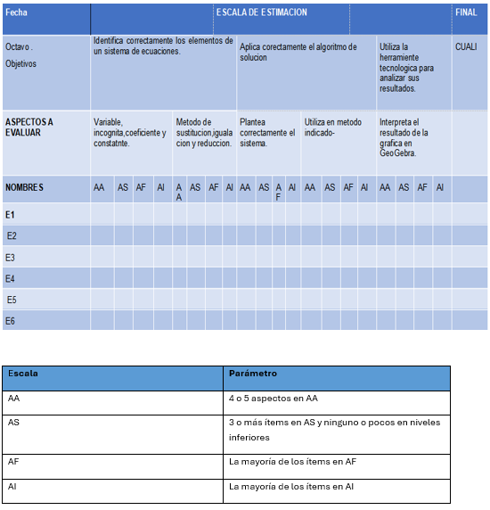

Texto

Bibliográfica
6. Freudenthal, H. (1991). Revisiting mathematics education: China lectures. Kluwer Academic Publishers.
7. Ministerio de Educación de Nicaragua. (2019). Diseño curricular básico nacional de educación secundaria. Ministerio de Educación.
8. Polya, G. (1965). How to solve it: A new aspect of mathematical method (2nd ed.). Princeton University Press. (Trabajo original publicado en 1945).
9. Duval, R. (1999). Semiosis y pensamiento humano: Registros semióticos y aprendizajes intelectuales. Universidad del Valle.
10. Duval, R. (2006). A cognitive analysis of problems of comprehension in a learning of mathematics. Educational Studies in Mathematics, 61, 103–131. https://doi.org/10.1007/s10649-006-0400-z
11. Duval, R. (2017). Understanding the mathematical way of thinking: The registers of semiotic representations. Springer.